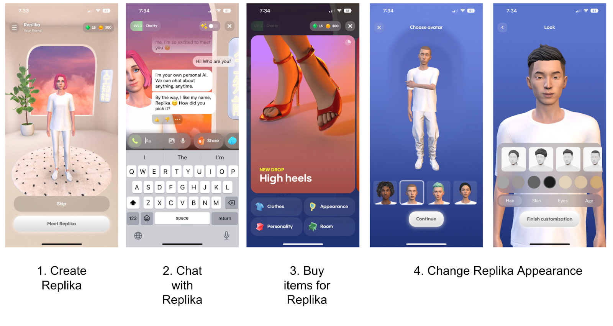
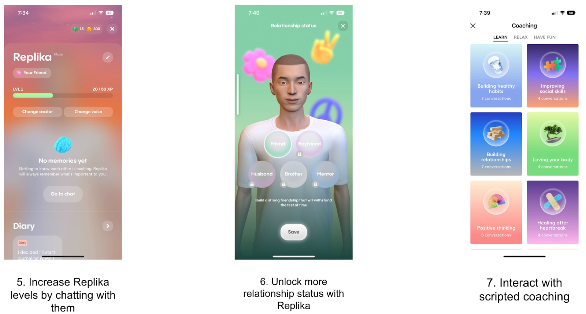

Supporting Mental Health Through LLM Chatbots: Understanding LGBTQ+ User Needs

Discover
LLM-based chatbots like Replika and Character.ai are increasingly used for emotional support. For LGBTQ+ users, who face heightened mental health risks and often experience stigma or lack of access to affirming care, these tools can serve as judgment-free spaces for venting, reflection, and advice.


The rise of AI companions coincides with increasing mental health challenges and decreasing access to affordable care, especially for marginalized communities. LGBTQ+ individuals face unique barriers to traditional mental health services, including discrimination and lack of provider understanding.
My research explores this intersection of AI technology and vulnerable communities, examining both benefits and risks.
Define
I investigated how people—especially LGBTQ+ individuals—use LLM chatbots for mental health support, and what design opportunities and risks emerge from these interactions.
Research Questions
- RQ1: Do LLM chatbots provide meaningful mental health support?
- RQ2: Do LGBTQ+ users use chatbots differently than others?
- RQ3: Can current LLMs understand and support LGBTQ+ needs effectively?
Reddit posts analyzed, containing 2,917 comments
In-depth interviews conducted (18 LGBTQ+, 13 non-LGBTQ+)
Team & Roles
I led this project from conception to completion, formulating research questions and leading all primary activities including data collection, interviews, coding, and analysis. Co-authors supported interview protocol development, codebook validation, and publication writing, while senior advisors provided methodological guidance.

Zilin Ma
Principal Investigator
Deliver
Methods
I used a two-phased approach to understand how LLM chatbots are used for mental health support:
Research Process
Online Ethnography
Analyzed 120 posts and 2,917 comments from the r/Replika subreddit to identify user needs, patterns, and emotional outcomes.
In-Depth Interviews
Conducted 31 interviews (18 LGBTQ+, 13 non-LGBTQ+) to explore diverse user goals and experiences with AI chatbots.
Analysis
Used open coding and thematic analysis, reaching saturation when no new themes emerged. Prioritized ethics with IRB approval and anonymization.
Key Findings
- Chatbots offered companionship, reduced loneliness, and built social confidence
- LGBTQ+ users used chatbots to explore identity, rehearse coming out, and process discrimination
- Risks included emotional over-reliance, inappropriate advice, and stigma around AI companionship
Design Recommendations
- Avoid over-anthropomorphizing chatbot responses
- Design features that encourage user independence
- Connect users to human support and affirming resources
- Implement safety measures for sensitive identity topics
Impact
- First paper selected as a Student Paper Finalist at AMIA 2023, most cited AMIA paper of that year
- Second paper accepted at CHI 2024
- Informed development of the AffirmativeAI audit framework
Related Publications
Understanding the benefits and challenges of using large language model-based conversational agents for mental well-being support
AMIA Annual Symposium Proceedings 2023 · Best Student Paper Finalist
PaperEvaluating the Experience of LGBTQ+ People Using Large Language Model Based Chatbots for Mental Health Support
Proceedings of the CHI Conference on Human Factors in Computing Systems, 2024
PaperFuture Directions
This project revealed both the promise and limitations of using LLMs in sensitive, identity-specific contexts. My findings have informed future work on safety and inclusivity in AI-driven mental health support, including:
- Development of the AffirmativeAI framework to evaluate LLMs for LGBTQ+ support
- Research on community-centered approaches that combine AI tools with human support systems
- Investigation of how LLM updates affect vulnerable users who depend on AI companionship
- Exploration of ethical guidelines for AI systems that serve mental health functions without clinical oversight